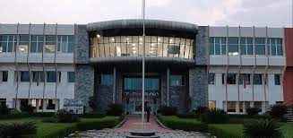
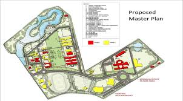

INDIAN INSTITUTE OF INFORMATION TECHNOLOGY

भारतीय सूचना प्रौद्योगिकी संस्थान कोटा
(An Institute of National Importance under an Act of Parliament)
Welcome to Indian Institute of Information Technology Kota
Indian Institute of Information Technology, Kota (IIIT, Kota) is an institute of national importance. IIIT Kota
is a joint venture of the Ministry of Education (MoE) Govt. of India and Govt. of Rajasthan with Industry
Partners in Public-Private-Partnership (PPP) model. IIIT Kota was established in 2013. Currently, the institute
is mentored by Malaviya National Institute of Technology Jaipur (MNIT Jaipur) and is situated at MNIT Jaipur.
The main site of IIIT, Kota shall be constructed at Ranpur near Kota on 100.37 acres of land made available by
the Govt. of Rajasthan.

ABOUT IIIT KOTA
IIIT Kota has been challenging and developing great minds for many years.
Characterised by a tradition of creating a center for imparting technical education of international standards, we are committed to excellence in education, to innovative practice and to the concept of lifelong learning.The Indian Institute of Information Technology Kota, deemed to be a Institute of National Importance, was established in 2013 with a vision to contribute the IT world through education and research, entrepreneurship and innovation.
IIIT Kota is a joint venture of the Ministry of Education (MoE) Govt. of India and Govt. of Rajasthan with Industry Partners in Public-Private-Partnership (PPP) mode.
Currently the institute is mentored by Malaviya National Institute of Technology Jaipur (MNIT Jaipur) and situated at MNIT Jaipur. The main site of IIIT, Kota shall be constructed at Ranpur near Kota on 100.37 acres of land made available by the Govt. of Rajasthan. The institute is governed by the eminent personalities of the Government, Industry and Academia.
Currently we offer B.Tech in the discipline of Computer Science & Engineering and Electronics & Communication Engineering only. The institute attracts students from all over India and has the unique distinction of selecting 100% students on merit from across the country and abroad, pushing up the level of discourse and peer group at the institute.
It has a unique positioning as a leading technology institute with its interdisciplinary courses which crisscross information technology and social sciences being pursued by students from diverse academic backgrounds. Intersecting between technology and society, IIITK has grown in stature to become an institution of considerable repute with its unique model of education, research, and industry interaction. It works in partnership with the corporate sector, while retaining the freedom of an academic institution. Inspired by other renowned institutions, it strives to emulate an academic culture that is on par with the best international institutions.
Building Status at Permanent Campus
As of now, IIIT Kota does not have its own building. It is being operated from the premises of the mentor institute (MNIT Jaipur). However the boundary wall along with tree plantation has been completed in its permanent campus at Ranpur near Kota.
Further, the director office, conference hall, accounts and establishment block, academic block with adequate number of lecture theatres, labs and faculty cabins, seminar hall with capacity of more than 200 persons, computer center, library, workshop and store, boys and girls hostels, guest house, director and staff residencies, transit accommodation and other development work such as rain water harvesting structure, sewerage treatment plant, overhead tank are to be taken up in the phased manner on receipt of required funds from the central and state governments for which the matter is under vigorous pursuance with the authorities concerned.

.jfif)
.jfif)

OUR Recruiter
| Company |
Contact |
PACKAGE |
| Alfreds Futterkiste |
Maria Anders |
82lacks |
| Centro comercial Moctezuma |
Francisco Chang |
62lacks |
| Ernst Handel |
Roland Mendel |
49lacks |
| Island Trading |
Helen Bennett |
50lacks |
| Laughing Bacchus Winecellars |
Yoshi Tannamuri |
34lacks |
| Magazzini Alimentari Riuniti |
Giovanni Rovelli |
70lacks |
Location at MNIT Jaipur..

Contact us
📞 phone 0141-2715071
📨
email-office@iiitkota.ac.in
"OUR Recruiter"